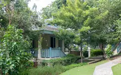
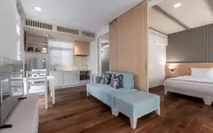
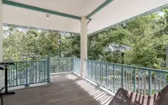
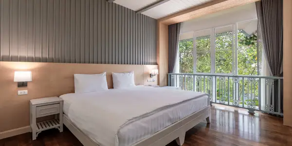
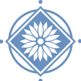
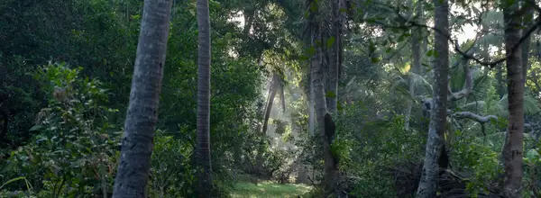

Blue Orchid Beach Krabi
ConceptNine more example websites
Examples of what I can build for you.

Hot Rock Climbing School
Concept A scroll-driven site for Railay’s climbing school, running since 1994 — its hand-painted sign rebuilt as the logo, in English and Chinese. View site →
Thewaritnoi Krabi Muaythai
Client project Five pages for a Muay Thai gym in Ao Nang — training, stay, gallery and directions — built from the gym’s own photography. View site →
Cocco House
Client project A single-page landing site for a garden bungalow stay in Krabi. View site →
Na Sook Wellness Resort
Client project Villas, farm-to-table dining and treatments for the Krabi resort I manage day to day — live, with direct booking. View site →
PP Princess
Client project The resort’s live site — rooms, dining, island tours and direct booking for a property on Phi Phi Island. View site →
Spirit Mountain
Client project Climbing, wellness and sustainability under one roof, opened by a full-bleed video hero. View site →
Zeetar
Concept A bilingual Thai–English site for a Krabi beauty studio, with an animated WebGL hero layered over the room photography. View site →
Diamond Beach Nammao
Concept A single-page site plus a complete written brand guideline — colour, type and voice. View site →
Puzzle TCG
Concept A Thai-first site and brand identity for a One Piece and Pokémon card shop, opened by a 3D ring of cards you can grab and spin. View site →Yours next?
Your project Send me your current site on Line and I’ll tell you what I’d change. Message me on Line →An in-house app for your business and team.
In daily useOne example: Na Sook’s staff app puts housekeeping, maintenance, purchasing, attendance and payroll in one place. I designed it, built it and keep it running, and the whole team works from it every shift.
สถานะ Villa
วันพุธ 7 ต.ค.
รอเช็คเอ้าท์Villa 2
ว่างVilla 6
รอตรวจVilla 8
ทำความสะอาด Villa 4
Pool Villa · เช็คเอ้าท์ 09:52
สถานะ Villa
วันพุธ 7 ต.ค.
We look forward to welcoming youBuilt since May 2026: 78 screens, 79 server routes and over 1,100 commits, with LINE alerts and push notifications for whoever is on shift.
Who is building it
I was born and raised in Krabi and I’ve been in hospitality most of my life. I’m the acting General Manager at Na Sook Wellness Resort, and a lot of what I do there is building the systems behind it — the staff side like scheduling and payroll, the workflows and communication between departments, and the small automations that stop people redoing the same work by hand.
I build websites the same way. They don’t cost much.
Your website, maintained. Not delivered and abandoned.
Most agencies build your site, invoice you, and vanish. Then your rates change, the low-season promo needs pulling, a new villa opens — and you’re waiting three weeks for a quote to change one paragraph.
I run a resort in Krabi. I know what breaks and when.
From 900 THB / month — introductory rate
Includes the site, hosting, and unlimited content changes — text, photos, rates, seasonal promos. 12-month term, no setup fee. A domain name of your own is charged separately — I’ll register it and look after the renewals so it never lapses.
Message me on Line and it’s done that day.
Leo Silvagni
Line is the fastest way to reach me. I answer the same day.